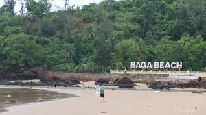
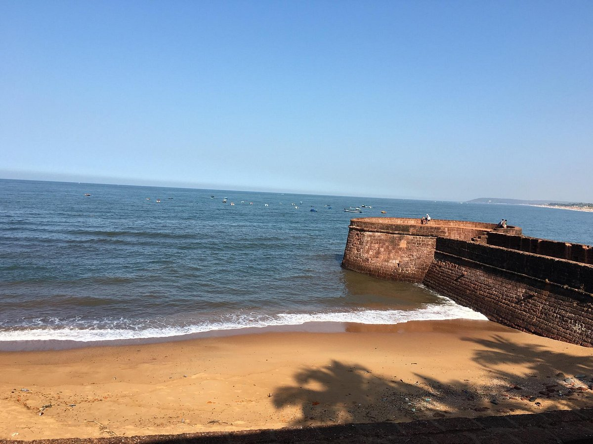
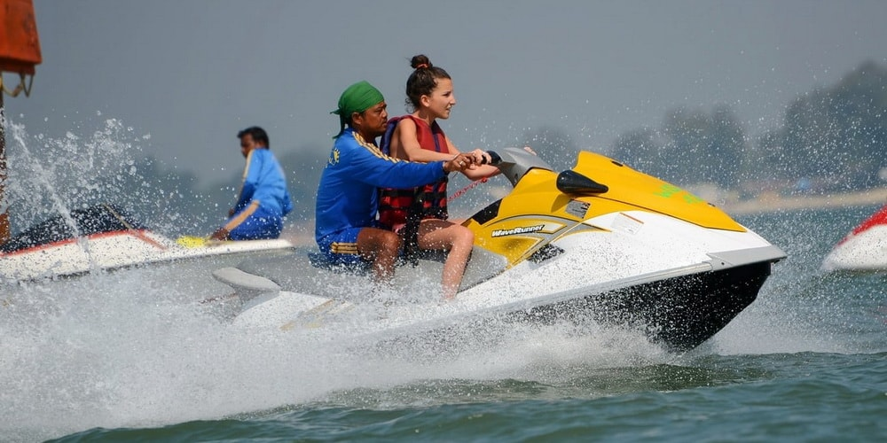
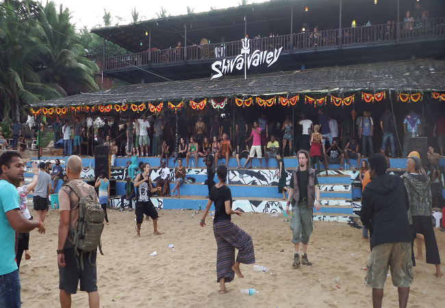

Discovering Goa
Introduction
Goa, a tropical paradise on India’s west coast, is renowned for its stunning beaches, vibrant nightlife, and rich cultural heritage. Whether you're seeking relaxation or adventure, Goa offers something for everyone. Let’s dive into the best experiences this ultimate beach destination has to offer!
Best Beaches to Explore
Baga beach
Baga Beach is famous for its lively atmosphere, making it the perfect spot for party lovers. Here, you can indulge in thrilling water sports, relax on the sun-kissed sands, or enjoy a refreshing drink at one of the many beach shacks. The beach is known for its vibrant nightlife, with numerous clubs and bars lighting up the evenings.
Anjuna beach
Anjuna Beach is a haven for free spirits and those seeking a bohemian vibe. Known for its iconic flea market and trance parties, this beach is a blend of scenic beauty and cultural richness. Don’t forget to explore the nearby rocky shores and enjoy the stunning sunset views.
Palolem BEach
For a more tranquil experience, head to Palolem Beach. This crescent-shaped paradise is perfect for swimming and relaxation. Kayaking in the calm waters or joining a yoga retreat will rejuvenate your soul amidst the serene surroundings.
Calangute beach
Calangute Beach is the largest and most popular beach in Goa, attracting tourists. Calangute Beach, known as the "Queen of Beaches," is a vibrant hub in Goa, perfect for sunbathing and water sports. With its lively shacks and bustling atmosphere, it’s an ideal spot for both relaxation and adventure.
Must-Do activities
Water Sports
Goa is a water sports enthusiast's dream! From parasailing and jet-skiing to banana boat rides, there’s no shortage of adrenaline-pumping activities. Baga and Calangute beaches are the best spots to experience the thrill.
Beach Parties
Goa’s nightlife is legendary. Join the vibrant beach parties at venues like Tito's and Café Mambo, where you can dance the night away to the latest beats, surrounded by a lively crowd and an electrifying atmosphere.
Cultural tours
Take a break from the beaches and explore Goa's rich heritage. Visit the historic forts, such as Aguada and Chapora, and the beautiful churches, including the Basilica of Bom Jesus and Se Cathedral, to immerse yourself in the local culture.
Culinary Delights
Beach Shacks
No trip to Goa is complete without savoring its delectable seafood. Visit beach shacks like Britto's and Suwadik Goan Kitchen to enjoy fresh fish curry, prawn balchão, and the famous Goan vindaloo while soaking in the beach vibes.
Night Markets
Don’t miss the vibrant night markets, such as the Anjuna Flea Market and Saturday Night Market in Arpora. Here, you can taste local street food, shop for handicrafts, and enjoy live music performances under the stars.

Goan Cuisine
Goan cuisine is a unique blend of Portuguese and Indian flavors. It is a delightful fusion of flavors, featuring fresh seafood, coconut, and aromatic spices. Signature dishes like fish curry, vindaloo, and bebinca showcase the region's rich culinary heritage.
Conclusion
Goa is not just a destination; it’s an experience that stays with you long after you leave. With its stunning beaches, rich culture, and vibrant nightlife, Goa truly deserves its title as the ultimate beach destination. Whether you’re a thrill-seeker or looking for a peaceful retreat, Goa has it all. Pack your bags and get ready to create unforgettable memories in this coastal paradise!
Comments